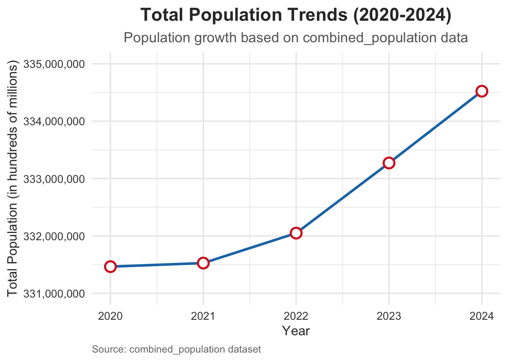
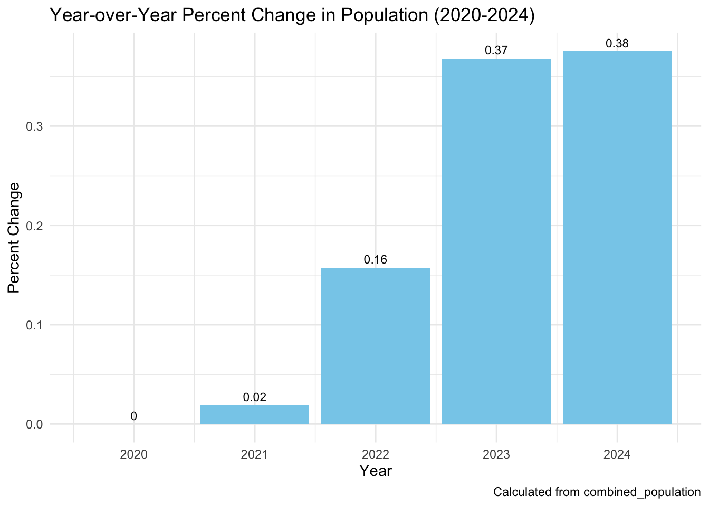

── Conflicts ────────────────────────────────────────── tidyverse_conflicts() ──
✖ dplyr::filter() masks stats::filter()
✖ dplyr::lag() masks stats::lag()
ℹ Use the conflicted package (<http://conflicted.r-lib.org/>) to force all conflicts to become errors
library(readxl)library(jsonlite)
Attaching package: 'jsonlite'
The following object is masked from 'package:purrr':
flatten
# Step 3: Line plot for total populationggplot(yearly_population, aes(x = year, y = total_population)) +geom_line(color ="#1f77b4", size =1.2) +geom_point(size =4, color ="#d62728", shape =21, fill ="white", stroke =1.5) +labs(title ="Total Population Trends (2020-2024)",subtitle ="Population growth based on combined_population data",x ="Year",y ="Total Population (in hundreds of millions)",caption ="Source: combined_population dataset" ) +theme_minimal(base_size =15) +theme(plot.title =element_text(face ="bold", size =18, hjust =0.5, color ="#333333"),plot.subtitle =element_text(size =14, hjust =0.5, color ="#666666"),axis.title.x =element_text(size =13, color ="#333333"),axis.title.y =element_text(size =13, color ="#333333"),axis.text =element_text(size =11, color ="#444444"),plot.caption =element_text(size =10, hjust =0, color ="#777777") ) +# Fine-tune y-axis scale to show readable numbersscale_y_continuous(labels = scales::comma, limits =c(3.31e8, 3.35e8))
Warning: Using `size` aesthetic for lines was deprecated in ggplot2 3.4.0.
ℹ Please use `linewidth` instead.

# Step 4: Bar plot for percent changesggplot(yearly_population, aes(x = year, y = Percent_Change)) +geom_bar(stat ="identity", fill ="skyblue") +geom_text(aes(label =round(Percent_Change, 2)), vjust =-0.5, size =3) +labs(title ="Year-over-Year Percent Change in Population (2020-2024)",x ="Year",y ="Percent Change",caption ="Calculated from combined_population" ) +theme_minimal()

# Using the graph, it looks like there are 3 periods: 2020 - 2021, 2021 - 2022, and 2022 - 2024get_cdc_data <-function(api){request(api) |>req_url_query("$limit"=10000000) |>req_perform() |>resp_body_json(simplifyVector =TRUE)}deaths_raw <-get_cdc_data("https://data.cdc.gov/resource/r8kw-7aab.json")deaths <- deaths_raw |>filter(!str_detect(state, "United States")) |>drop_na(year, state, covid_19_deaths) |>mutate(deaths =parse_number(covid_19_deaths),year =substr(as.character(start_date), 1, 4) ) |>group_by(state, year) |>summarise(total_deaths =sum(deaths, na.rm =TRUE),.groups ="drop" )deaths_2020_table <- deaths |>filter(year ==2020) |>group_by(state) |>summarize(total_deaths =sum(total_deaths, na.rm =TRUE), .groups ='drop') |>arrange(desc(total_deaths))deaths_2020_table
# A tibble: 53 × 2
state total_deaths
<chr> <dbl>
1 California 102123
2 Texas 101211
3 New York City 66930
4 Florida 65751
5 Pennsylvania 55603
6 New Jersey 54665
7 Illinois 50374
8 New York 48877
9 Ohio 45611
10 Michigan 37174
# ℹ 43 more rows
tail(deaths_2020_table, n =10) # Show the last 10 rows
# A tibble: 10 × 2
state total_deaths
<chr> <dbl>
1 North Dakota 4452
2 Montana 3760
3 Delaware 3204
4 District of Columbia 2935
5 New Hampshire 2427
6 Wyoming 1306
7 Maine 1282
8 Hawaii 1001
9 Alaska 678
10 Vermont 388
# A tibble: 53 × 2
state total_deaths
<chr> <dbl>
1 Texas 145857
2 California 143703
3 Florida 116404
4 Ohio 61416
5 Pennsylvania 61390
6 Georgia 51755
7 North Carolina 45512
8 Michigan 44769
9 New York 44175
10 Arizona 41964
# ℹ 43 more rows
tail(deaths_2021_table, n =10) # Show the last 10 rows
# A tibble: 10 × 2
state total_deaths
<chr> <dbl>
1 Delaware 3717
2 Rhode Island 3537
3 New Hampshire 3496
4 South Dakota 2848
5 Wyoming 2775
6 North Dakota 2691
7 Alaska 2400
8 Hawaii 2066
9 District of Columbia 1994
10 Vermont 752
# A tibble: 53 × 2
state total_deaths
<chr> <dbl>
1 California 88402
2 Texas 70290
3 Florida 67514
4 Pennsylvania 46096
5 Ohio 45795
6 New York 36989
7 North Carolina 33819
8 Illinois 33153
9 Michigan 32052
10 Tennessee 28214
# ℹ 43 more rows
tail(deaths_2022_2023_table, n =10) # Show the last 10 rows
# A tibble: 10 × 2
state total_deaths
<chr> <dbl>
1 Delaware 3161
2 Rhode Island 2673
3 Montana 2541
4 Hawaii 2361
5 South Dakota 2198
6 North Dakota 1777
7 District of Columbia 1400
8 Vermont 1356
9 Wyoming 1114
10 Alaska 953
api <-"https://data.cdc.gov/resource/pwn4-m3yp.json"res <-request(api) |>req_url_query('$limit'=10000000000) |>req_perform()cases <- res |>resp_body_json(simplifyDataFrame =TRUE) |>as.data.frame() |>select(state, date = end_date, case = new_cases) |>mutate(case =as.numeric(case)) cases_summary <- cases |>mutate(year =substr(date, 1, 4),period =case_when( year ==2020~"2020", year ==2021~"2021", year %in%c(2022, 2023) ~"2022-2023" )) |>group_by(period) |>summarise(total_cases =sum(case, na.rm =TRUE),avg_daily_cases =mean(case, na.rm =TRUE),.groups ="drop")cases_summary